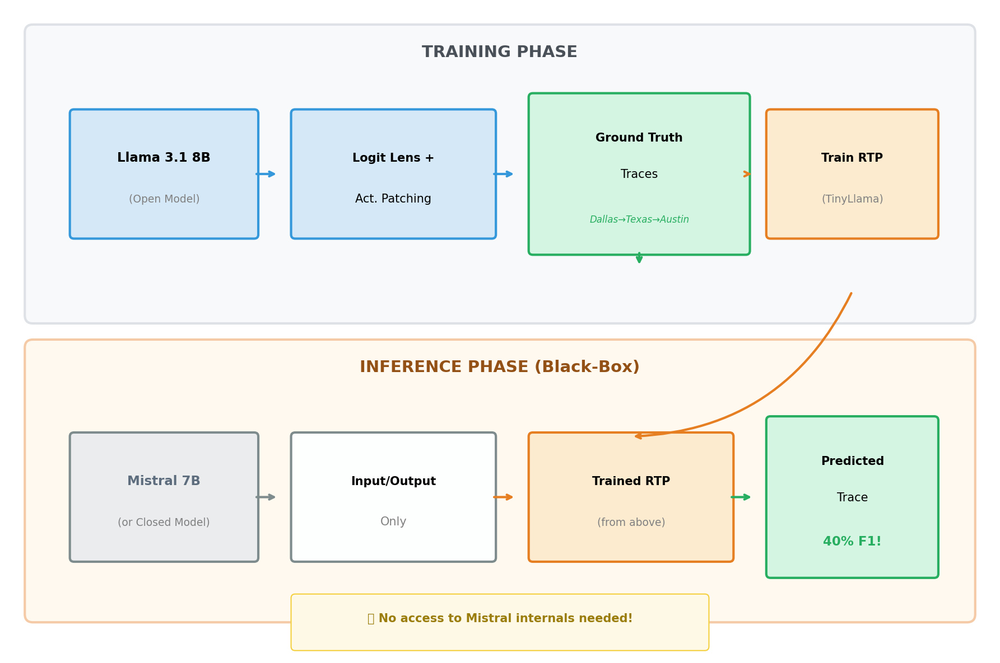
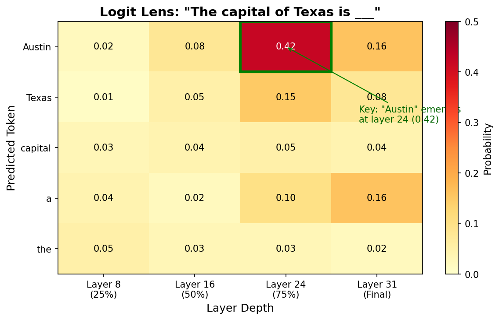
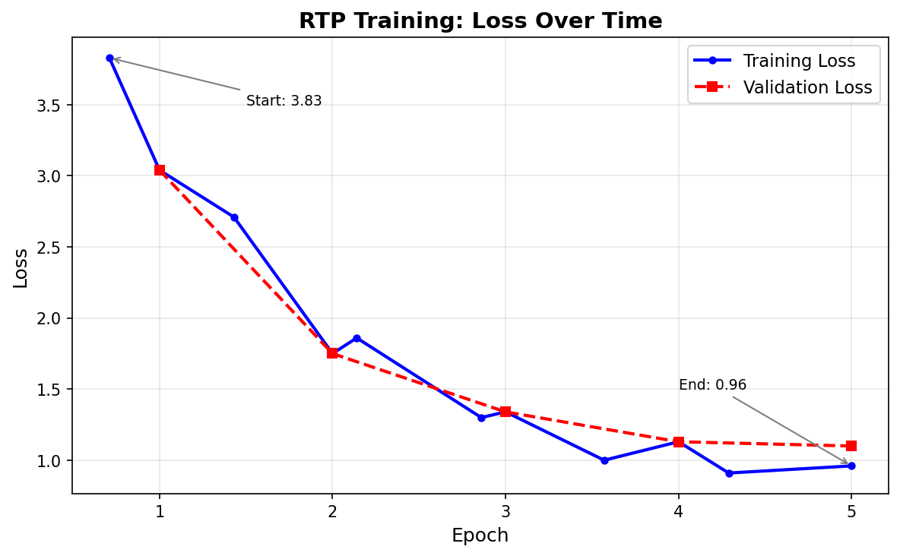
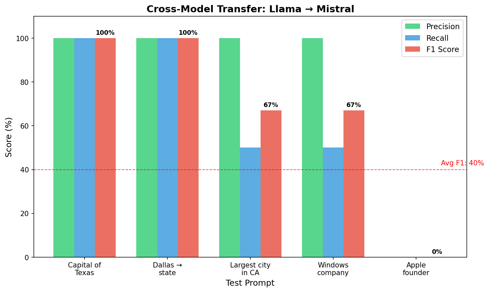

Large language models often reach correct answers through implicit reasoning steps that are never verbalized. Current interpretability techniques require white-box access to model internals, limiting their applicability to closed models. We present a method for predicting hidden reasoning traces without access to model weights. Our approach extracts ground-truth reasoning traces from open-weight models using logit lens analysis, trains a lightweight Reasoning Trace Predictor (RTP) on the resulting (input, output, trace) triplets, and tests whether learned patterns transfer to unseen model architectures. Key finding: an RTP trained exclusively on Llama 3.1 8B traces achieves 40% F1 in predicting Mistral 7B's internal reasoning—demonstrating that implicit reasoning patterns transfer across architectures. This suggests the possibility of "interpretability transfer": using open models to understand closed ones.
Language models routinely solve problems through implicit reasoning that never surfaces in their outputs. A model asked "What is the capital of the state where Dallas is located?" produces "Austin" without mentioning Texas, yet internally represents and uses this intermediate concept. Recent work from Anthropic demonstrates this gap starkly: reasoning models verbalize their actual decision factors only 20–39% of the time.
This creates a fundamental problem for AI safety and alignment. If models reason in ways they don't disclose, how can we verify their reasoning is sound? Current interpretability techniques—logit lens, tuned lens, activation patching—provide powerful tools for examining internal representations, but require direct access to model weights. The most capable deployed models (GPT-4, Claude) remain closed, their reasoning processes opaque.
We propose a different approach: learning to predict reasoning traces from external observations alone. Our method:
Our key finding: reasoning patterns transfer across model architectures. An RTP trained only on Llama 3.1 8B achieves 40% F1 in predicting Mistral 7B's internal representations.
Mechanistic Interpretability. The logit lens projects intermediate residual stream states to vocabulary space, revealing what a model "believes" at each layer. Belrose et al. (2023) improve this with learned affine transformations (tuned lens). Activation patching establishes causal relationships by intervening on activations.
Reasoning Verification. Zhang et al. (2025) probe hidden states to predict correctness of intermediate reasoning steps. The Anthropic faithfulness study (2025) reveals that chain-of-thought explanations often fail to mention factors that influenced the model's decision.
Our Novelty. Prior work requires white-box access to the target model. We train on one model's internals and transfer predictions to another—potentially enabling interpretability of closed models via open surrogates.

Logit Lens Analysis. For each prompt, we project the residual stream at layers corresponding to 25%, 50%, 75%, and 100% of model depth to vocabulary space. We identify concepts that emerge before the final answer crystallizes.
Activation Patching. To verify concepts are causally used, we zero-ablate the residual stream at each layer and measure the change in output probability. Concepts with causal effect > 0.1 are retained.

| Task | Example | Trace |
|---|---|---|
| Multi-hop factual | "Capital of state where Dallas is" | Dallas → Texas → Austin |
| Direct factual | "Apple was founded by Steve" | Apple → Steve → Jobs |
| Arithmetic | "37 + 48 =" | 37, 48 → 85 |
| Sentiment | "Critics loved it. The movie was" | positive → good |
Table 1: Task categories for dataset generation.
After filtering, we obtain 74 examples (55 train, 19 test).
We fine-tune TinyLlama 1.1B using LoRA with rank 8. Training for 5 epochs reduces loss from 3.8 to 0.9.

Setup. We train the RTP exclusively on Llama 3.1 8B traces. At test time, we extract ground-truth traces from Mistral 7B (never seen during training), use the RTP to predict traces, and compare to Mistral's actual internal representations.
| Prompt | Llama | Mistral | Predicted | F1 |
|---|---|---|---|---|
| Capital of Texas | Austin | Austin | Austin | 100% |
| Dallas → state | Texas | Texas | Texas | 100% |
| Largest city CA | Los | Los | Los | 67% |
| Windows company | Microsoft | Microsoft | Microsoft | 67% |
| Apple founder | Jobs | Apple | Jobs | 0% |
| Average | 40% |
Table 2: Cross-model transfer results.

What transfers. Entity knowledge and factual associations show strong transfer. Both models internally represent "Texas" when reasoning about Dallas.
What doesn't transfer. Fine-grained reasoning paths differ. For "Apple was founded by Steve," Llama emphasizes "Jobs" while Mistral represents "Apple."
Interpretation. High precision (64%) indicates predictions are rarely wrong. Lower recall (30%) suggests we miss some of Mistral's reasoning, expected given architectural differences.
Our results suggest that implicit reasoning has universal structure across architectures. This opens possibilities for:
We demonstrate that implicit reasoning traces can be predicted across model architectures. An RTP trained only on Llama 3.1 8B achieves 40% F1 in predicting Mistral 7B's internal reasoning.
The key insight: language models may think more alike than their architectures suggest—and this similarity enables a new form of interpretability transfer from open to closed models.
[1] Belrose, N., et al. (2023). Eliciting latent predictions from transformers with the tuned lens. arXiv:2303.08112.
[2] Chen, A., et al. (2025). Reasoning models don't always say what they think. Anthropic Research.
[3] Hu, E.J., et al. (2022). LoRA: Low-rank adaptation of large language models. ICLR 2022.
[4] Meng, K., et al. (2022). Locating and editing factual associations in GPT. NeurIPS 2022.
[5] nostalgebraist. (2020). Interpreting GPT: The logit lens. LessWrong.
[6] Zhang, Y., et al. (2025). Reasoning models know when they're right. arXiv:2504.05419.